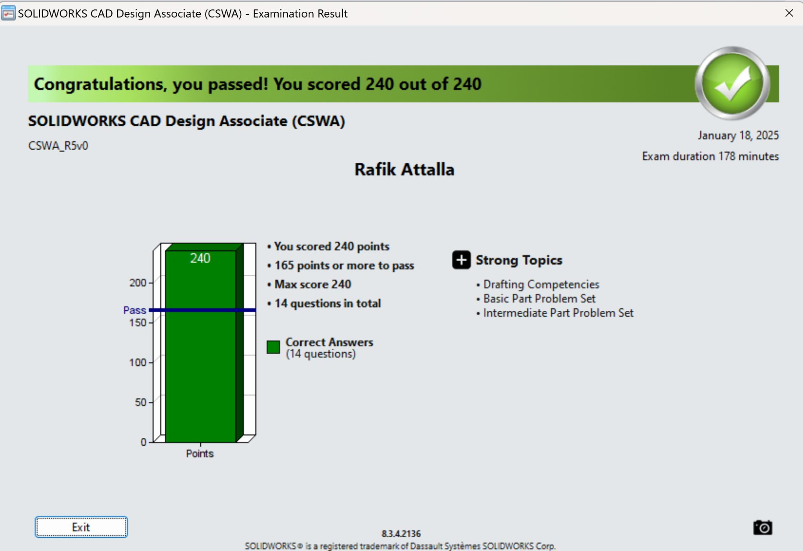

The Certificate of SolidWorks Associate is awarded to those who complete the exam with a score of 70% or higher. The exam tests one's skill in SolidWorks's features, drawings and assemblies. Below is how I practiced and prepared for the exam testing my skills with different SolidWorks features.
After continous practice and SolidWorks usage through projects and school assignements I was able to succesfully pass the CSWA exam scoring a perfect 100.
